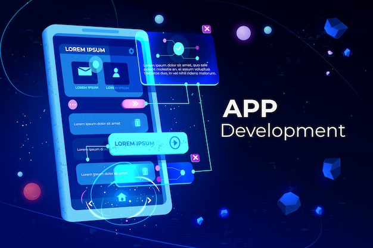

Welcome to InnoStorey Innovations Pvt Ltd
At InnoStorey, we are more than just a technology company — we are a dynamic innovation partner committed to transforming ideas into impactful realities. Our foundation is built on a passion for cutting-edge technology and a dedication to solving complex challenges through intelligent solutions.
Since our inception, we have been driven by a single purpose: to empower businesses and communities with smart, scalable, and sustainable technology that accelerates growth and enhances lives. Whether it’s pioneering AI-powered applications, enabling seamless cloud integration, or designing IoT ecosystems, we bring creativity, expertise, and an unwavering commitment to excellence to every project.
Our collaborative approach means we work closely with clients, partners, and stakeholders to deeply understand their unique needs and aspirations. This allows us to tailor innovative solutions that not only meet current demands but also future-proof their success in an ever-evolving digital landscape.
Join us on this exciting journey as we push the boundaries of technology, inspire innovation, and create a smarter tomorrow — together.
Our Vision & Mission
Vision: To be a global leader in transformative technology solutions that create a smarter, safer, and more sustainable future by leveraging innovation and collaboration.
Mission: We strive to deliver intelligent systems, innovative applications, and impactful digital products by combining deep tech expertise with customer-centric values. Our mission is to accelerate innovation, foster digital resilience, and maximize value for every stakeholder we serve across industries.
Core Services & Expertise

AI & Custom Software Development
We develop advanced AI-powered software solutions tailored to industry-specific needs, including natural language processing, computer vision, and predictive modeling. Our bespoke applications help automate complex workflows, enhance decision-making, and unlock new business opportunities.
IoT & Smart Automation
From smart homes to industrial-scale automation, we design and deploy interconnected IoT ecosystems that enable real-time monitoring, remote control, and data-driven insights. Our solutions boost operational efficiency, safety, and sustainability across various sectors.

Cloud Computing & Cybersecurity
We offer secure cloud migration, scalable infrastructure setup, and continuous DevOps integration to accelerate your digital transformation journey. Our cybersecurity services protect your assets with multi-layered defense strategies, compliance management, and threat intelligence.
Web Development
Creating responsive, secure, and scalable websites tailored for exceptional user experience and business growth.

Mobile App Development
Mobile App DevelopmentDesigning and building native and cross-platform mobile apps to keep your business connected on the go.

Data Analytics & Business Intelligence
Leverage your data assets with our advanced analytics, BI dashboards, and predictive models. We empower organizations to extract actionable insights, identify trends, optimize processes, and make smarter, data-driven decisions to stay competitive.
Featured Portfolio

AI Healthcare Platform
A revolutionary AI-powered diagnostic platform that provides real-time health insights by integrating patient data, medical imaging, and clinical decision support. This platform streamlines workflows for healthcare providers, improves patient outcomes, and enhances resource utilization.

Smart City Automation
Comprehensive IoT-based urban automation solutions, including intelligent traffic management, energy-efficient street lighting, and real-time public safety monitoring. This project helps cities optimize resources, reduce emissions, and enhance quality of life for citizens.

Responsive Business Webs+ite
A sleek, mobile-first corporate website for a consulting firm. Designed with accessibility and performance in mind, the site includes animated sections, contact forms, service pages, and SEO-optimized content for better Google ranking.
Custom E-commerce Platform
A full-featured e-commerce website for a fashion startup with secure payment integration, dynamic product catalog, real-time order tracking, and an intuitive admin dashboard for inventory and sales analytics.
Customer Testimonials
Why Choose InnoStorey?
We combine technical prowess with human-centric design to deliver innovation that truly matters. Our agile teams work closely with clients to understand unique challenges and transform them into breakthrough solutions. With a focus on quality, scalability, and future readiness, we ensure every solution delivers measurable business value.
- Industry Expertise: Deep knowledge across multiple sectors including healthcare, manufacturing, finance, and smart cities.
- Innovative Culture: Continuous learning and adoption of cutting-edge technologies to stay ahead of the curve.
- Customer-Centric Approach: Personalized solutions tailored to your business goals and operational realities.
- Proven Track Record: Successful projects delivered on-time and within budget, with strong client satisfaction.
Connect With Us
Let's build the future together. Whether you’re a startup or an enterprise, our doors are always open for collaboration. Reach out to learn how we can help accelerate your digital transformation journey.
Get in Touch